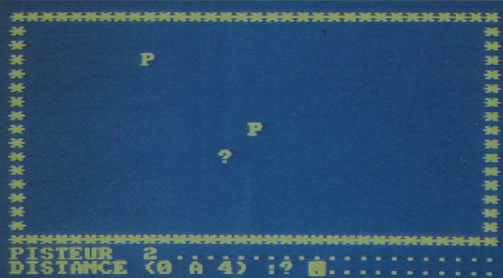

But du projet
Objectif : Faire un portage du jeu "La Traque" en language C. Essayer de rajouter une couche graphique en SDL.
L'examen se découpe en plusieurs parties :
- Comprendre les règles du jeu
- Ecrire un programme fonctionnel
- Ajouter une couche SDL
- Moderniser les règles
Le projet
1. Comprendre les règles du jeu
Les règles du jeu sont simple. Un monstre est caché dans la forêt. Vous disposez d'une équipe de pisteurs (de 1 à 10 au choix). Avant de commencer, vous devez placer vos pisteurs sur le terrain. Une fois que cela est fait, le monstre se met à rôder.
Le tour commence. Vos pisteurs indiquent s'ils voient des trâces du monstre autour deux. En fonction de ces informations, vous pouvez déplacer vos pisteurs de 0 à 4 cases afin de débusquer le monstre. Si un pisteur vois le monstre, il tir et vous informe s'il a touché sa cible.
Une fois que vous avez joué tous vos pisteurs, c'est au tour du monstre. Si le monstre parvient à attraper un pisteur, celui-ci disparait. Attention, le monstre suit les traces des pisteurs...
2. Ecrire un programme fonctionnel
Le programme est écrit en language C. Il suit fidèlement le déroulement du sujet. Il est stable et fonctionnel. Vous pouvez le consulter par ce lien (prenez la branche "master") :
Faites attention. Ce repository comporte deux branches. Le première, avec le jeu en console, est la branche "master". La deuxième, avec la couche SDL, est la branche "SDL".
3. Ajouter une couche SDL
En parlant de SDL... Quelques jours avant la date du rendu, je trouvais la SDL insurmontable. Mais, petite victoire après petite victoire, j'ai finis par en comprendre la logique.
Vous pouvez consulter mon travail par ce lien (prenez la branche "SDL") :
4. Moderniser les règles
Il nous est demandé de proposer deux game concepts simples visant à moderniser les règles de "La Traque". A suivre...